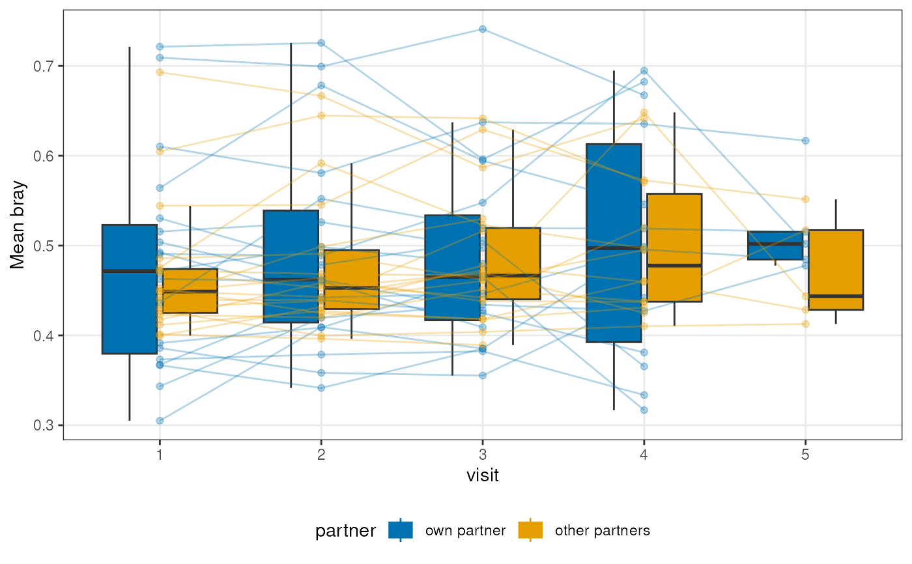

Plot the dissimilarity of subjects to their partners over time
Source:R/AllGenerics.R, R/plotPartner.R, R/zzz-mae.R
plotPartner.RdplotPartner() draws, for each sample of a subject linked to a
partner, such as an infant to its mother or a recipient to the donor of
a faecal transplant, its dissimilarity to the samples of its own partner
and to the samples of the other partners. Own partners closer than the
others show that partners share their microbiota.
Usage
plotPartner(x, ...)
# S4 method for class 'SummarizedExperiment'
plotPartner(
x,
dissimilarity,
time.col,
group,
partner.col,
layout = c("line", "box", "violin"),
show.individuals = TRUE,
smooth = c("none", "mean", "median", "loess"),
facet.by = NULL,
max.gap = NULL,
...
)
# S4 method for class 'MultiAssayExperiment'
plotPartner(x, ..., experiment = 1L)Arguments
- x
a
SummarizedExperimentobject.- ...
additional arguments passed to the main layer, as in
plotTrend.- dissimilarity
Character scalar. Specifies the sample by sample dissimilarity inmetadata(x), as stored bymia::addDissimilarity().- time.col
Character scalar. Specifies the column fromcolData(x)that contains sampling times: numeric,Date,POSIXctor a factor of visits. Only the times of linked subjects are used.- group
Character scalar. Specifies the column fromcolData(x)that identifies subjects.- partner.col
Character scalar. Specifies the column fromcolData(x)that gives the partner of each subject, a value of thegroupcolumn, on all its samples, andNAon the samples of partners and of subjects without one.- layout
Character scalar. Draws one line per subject and comparison ("line"), or boxes ("box") or violins ("violin") per time point, own and other partners side by side. (Default:"line")- show.individuals
Logical scalar. WhenTRUE, draws subject lines and points; whenFALSE, only boxes, violins or thesmoothcurve. (Default:TRUE)- smooth
Character scalar. Specifies a summary of each comparison on top:"none","mean"or"median"(over the samples at each distinct time), or"loess"(loess curve). (Default:"none")- facet.by
Character scalar. Specifies the column fromcolData(x)to facet by. (Default:NULL)- max.gap
Numeric scalar. Breaks a subject's line where consecutive samples are further apart than this, intime.colunits. For visits,NULLbreaks lines at visits without a sample; otherwiseNULLnever breaks lines. (Default:NULL)- experiment
Character scalarorinteger scalar. For aMultiAssayExperiment, the experiment to plot; its samples get thecolDataofx. (Default:1L)
Details
A subject's own partner value is its mean dissimilarity to all samples of its partner; the other partners value is its mean dissimilarity to all samples of the partners of other subjects, which is the expected value under random pairing. Samples of partners do not need times. Without other partners, as when one donor gives to all recipients, only the own partner is drawn.
Yassour et al. (2018, doi:10.1016/j.chom.2018.06.007, Fig. 1D) compare the dissimilarity of infants to their own and to unrelated mothers; Smillie et al. (2018, doi:10.1016/j.chom.2018.01.003, Fig. 2) follow the similarity of recipients to their donors after transplantation.
See also
plotOrigin for the features shared with the
partner.
Examples
# Illustration only: hitchip1006 has no linked design. Subjects are
# paired at random, so own and other partners should not differ.
data("hitchip1006", package = "miaTime")
tse <- hitchip1006
# Some profiles are stored twice; keep the first copy
counts <- SummarizedExperiment::assay(tse, "counts")
tse <- tse[, !duplicated(t(counts))]
tse <- tse[, tse$subject %in% names(which(table(tse$subject) >= 3))]
tse$visit <- factor(ave(tse$time, tse$subject, FUN = rank))
subjects <- unique(tse$subject)
half <- seq_len(length(subjects) %/% 2)
partner <- setNames(subjects[half], subjects[-half][half])
tse$partner <- unname(partner[as.character(tse$subject)])
tse <- mia::addDissimilarity(tse, method = "bray", assay.type = "counts")
plotPartner(tse, dissimilarity = "bray", time.col = "visit",
group = "subject", partner.col = "partner", layout = "box")
